0. How to use this guide
This is a 3-hour, hands-on class on the AI-assisted development workflow. You bring your own laptop, your own project (or one you want to start), and the persona that matches your job. We do three labs:
- Lab 1 — Onboarding. Run
/set-personaand/setup-stackon the project you brought. - Lab 2 — Architect + two sessions. Run
/architecton something you actually want to build, then drive two/start-session→/next-sessioncycles. - Lab 3 — Adapt to your real repo. Run
/detect-stackon an existing codebase you already have at work.
This class teaches the workflow only. It does not cover hooks, MCP servers, sub-agents, or automation — those are advanced topics for a later session. If you came expecting MCP server configuration today, look in materials/_old/ for the older deep-dive guides — they cover that material.
Each section has a short concept, a small diagram, and either a demo block (instructor runs it) or a lab block (you run it). When you see ⏱ Lab, stop reading and do it on your laptop.
1. What is Cursor?
The pain it solves
Without a workflow, AI-assisted coding looks like this: you open a chat, type a vague request, paste back the code, fix what didn’t compile, ask again. Every conversation starts from zero. The AI does not know your stack, your conventions, your phase of work, or what you did yesterday.
Cursor is an AI-native IDE (a fork of VS Code) that fixes this by giving the AI a project context (a file called .cursor/context.md) and a workflow of slash commands that move you through stages: pick a role, pick a stack, design the work, execute it in sessions, review, adapt.

What it is not (in this class)
Cursor has many advanced features — hooks, MCP servers, sub-agents, automation, @ context symbols. We do not teach any of those today. The workflow alone is enough value for one class, and the workflow is the foundation on which the advanced features rest. Build the foundation first.
Cursor turns ad-hoc AI chats into a disciplined, repeatable software-development workflow by remembering who you are, what you’re building, and where you stopped.
2. The SDD pipeline
Everything in this class hangs on one diagram: the Spec-Driven Development (SDD) pipeline. Memorize it now — every command you learn is a station on this line.

The spine
/set-persona → /setup-stack → /architect → /start-session ⇄ /next-sessionDesigners and PMs skip /setup-stack (they don’t have a tech stack — designers have Figma, PMs have PRDs). Everyone else runs the full spine.
Two enforcement rules
The pipeline is enforced by two rules baked into every command. This is not advice — the commands literally stop if these rules are violated.
| Command | Rule A — persona gate | Rule B — next pointer | What it produces |
|---|---|---|---|
| /set-persona | (writes the persona) | → /setup-stack (or /architect for designer/pm) |
.cursor/context.md + persona pack installed |
| /setup-stack | Stops if no persona | → /architect |
Stack rules + .stack-manifest.json |
| /architect | Stops if no persona | → /start-session |
plans/sessions/*.md + interface-contract.md + skeleton code |
| /start-session | Stops if no persona | → (use persona spokes, then /next-session) |
Code, tests, commits |
| /next-session | Stops if no persona | → /start-session (or /architect at phase boundary) |
Transition doc for next time |
Every command on the spine refuses to run without a persona. There is no “default engineer” fallback. If you skip /set-persona, everything else stops with ⚠️ No persona configured. Run /set-persona first.
3. Personas, stacks, and architecture shapes
The pipeline is parametric. The same five commands work for very different jobs because three knobs configure them: persona (who you are), stack (what tech you use), and architecture shape (what the output looks like).

The 5 personas
| Persona | For | Has a stack? | In-session spokes |
|---|---|---|---|
engineer | Backend / API / service developers | Yes | /engineer-tasks, /engineer-implement |
designer | UI / Figma designers | No | /designer-extract, /designer-compose, /designer-iterate, /designer-handoff |
pm | Product managers writing PRDs | No | /pm-decompose, /pm-validate, /pm-report |
data-scientist | Notebook + experiment + MLOps | Yes | /ds-explore, /ds-experiment, /ds-validate, /ds-handoff |
devops | Infra-as-code, K8s, config mgmt | Yes | (shell tools — terraform plan, ansible-lint, …) |
The stack library
Each persona that has a stack picks from a curated library. You don’t have to use the library — if your language isn’t there, /setup-stack offers a new option that scaffolds a custom stack from stacks/blank/.
- Engineer:
python-fastapi,go-gin,go-grpc,java-spring,node-express,node-nestjs - Data scientist:
python-datascience,python-spark,python-dbt-snowflake,r-tidyverse,python-mlops - DevOps:
devops-terraform,devops-ansible,devops-k8s-helm
Architecture shapes
The stack determines the shape of what /architect produces. This is why the same /architect command can plan a REST API today and a Spark pipeline tomorrow.
| Stack family | Architecture shape | Interface contract is… |
|---|---|---|
| python-fastapi, go-gin, java-spring, … | REST API | OpenAPI routes + data model |
| go-grpc | gRPC Service | .proto service + message types |
| python-spark, python-mlops | Data Pipeline | Job stages + schema + medallion layers |
| python-dbt-snowflake | Analytics Model | Staging/mart tree + source defs |
| r-tidyverse, python-datascience | Notebook / Experiment | EDA sequence + models + metrics |
| devops-terraform | Cloud Infrastructure | Module inputs/outputs + resource map |
| devops-ansible | IaC Playbook | Roles + playbooks + variable contract |
| devops-k8s-helm | GitOps Platform | Chart structure + values.yaml contract |
Lab 1 — Onboarding ⏱ 25 min
Pick the persona and stack that match your real job. Run them against the project you brought (or a fresh empty folder). End with a configured .cursor/context.md and a stack pack installed.
Steps
- Open a terminal in your project folder. If you don’t have one,
mkdir my-class && cd my-class && git init. - Copy this repo’s
.cursor/directory into your project:cp -r /path/to/cursor-course-templates/.cursor .— it brings the commands, rules, and a starter context file with it. - Open the folder in Cursor:
cursor .(or use File → Open Folder). - Open the chat panel with Cmd+L so you can type slash commands.
- Run
/set-persona. Pick the persona for your job (engineer, designer, pm, data-scientist, devops). - If your persona has a stack, run
/setup-stack. Pick the matching stack — or picknewif your language isn’t listed. - If you already had code in your folder,
/setup-stackwill detect it and ask: overwrite, skip templates, or merge per-file. Pick “skip templates” if you just want rules; pick “merge” if you want to see each conflict. - Open
.cursor/context.md. Confirm the## Active Personaand## Active Stackfields are filled in.
Checkpoint
- ✅
grep "Active Persona" .cursor/context.mdshows your persona - ✅
grep "Active Stack" .cursor/context.mdshows your stack (or is absent for designer/pm) - ✅
ls .cursor/.persona-manifest.jsonexists - ✅ (if stack chosen)
ls .cursor/.stack-manifest.jsonexists - ✅ Cursor’s Cmd+L chat shows the active rules in its system context (look for
.cursor/rules/*.mdcbeing loaded)
Run /undo all. It reads the manifests and removes every file that /set-persona and /setup-stack wrote. Then start over.
4. The 6 commands you need
Six commands. Five on the spine + /detect-stack for brownfield. That’s the whole class. Everything else is optional or persona-specific.

/set-persona
What it does: installs a persona pack (commands, agents, rules, MCP config) for the role you pick, into .cursor/. Writes ## Active Persona into .cursor/context.md.
When: first thing. Always. There is no escape hatch.
Output: persona files installed; .persona-manifest.json written so /undo can reverse it.
/setup-stack
What it does: shows you the stacks available for your persona, lets you pick one (or create a new one from stacks/blank/), copies the stack’s rules and templates into your project, and writes ## Active Stack + ## Architecture Shape to .cursor/context.md.
Smart bit: if your folder already has code in the stack’s language, it detects that and asks how to reconcile — overwrite, skip templates, or merge per-file. Your existing code is never blindly overwritten.
Designer / PM: this command is skipped — those personas have no tech stack.
/architect
What it does: turns a one-line idea into a full plan — plans/sessions/session-overview.md, one session file per phase, an interface-contract.md (OpenAPI / proto / DAG / PRD depending on shape), and a walking skeleton of code in the right places.
Gated 3-phase flow:
- Design — produce all planning docs, no code.
- ⛔ Human review gate — you read the plan and approve before any code is written.
- Scaffold — only then does the skeleton get built.
This means /architect never ships code you haven’t signed off on. We’ll go deeper in Section 5.
/start-session
What it does: loads the active stack, rules, and last session’s state. Asks for today’s session goal. Tells you which in-session spokes you have for your persona.
Spokes are persona-specific. An engineer gets /engineer-tasks and /engineer-implement. A PM gets /pm-decompose, /pm-validate, /pm-report. See Section 6 for the full map.
/next-session
What it does: wraps up today. Runs the persona’s quality gate (tests for engineer, screenshot comparison for designer, gap-detector for PM, experiment validator for data-scientist). Writes a transition doc you can paste into tomorrow’s session, including the exact spokes to call next time.
It points you back to /start-session. The loop is closed.
/detect-stack
What it does: the brownfield entry point. Scans your existing repo, figures out the language and framework, matches against the stack library, and generates a context file that mirrors what’s actually there — not what you wish were there.
When to use: instead of /setup-stack, when you already have code and you want the AI to learn your patterns rather than impose a template.
5. /architect — the gated 3-phase flow
This is the most important command in the class. It is also the easiest to misuse, so it has guardrails.

Why three phases?
The old failure mode of AI architects: ask “build me a task tracker,” receive 40 files of code in 30 seconds, discover three days later that the data model is wrong. By that point, refactoring is more expensive than starting over.
Gating the design phase forces a moment where you, the human, read what the AI plans to build before it builds it. Catching a bad design in a markdown file is free; catching it in code is not.
Phase 1 — Design
The AI produces:
plans/sessions/session-overview.md— the phase breakdown and session listplans/sessions/session-1-phase-0.md— the skeleton session planplans/sessions/session-N-phase-X.md— one file per feature phaseplans/interface-contract.md— the contract appropriate to your stack’s shape (OpenAPI, proto, DAG, PRD, model card…)
It also runs a self-audit step: re-reads its own output, diffs the manifest, checks that every promised file actually exists, and lists the architectural risks it sees. You see this audit before the gate.
Phase 2 — Human review gate
Nothing else happens until you say yes. Read the plan, push back if anything is wrong, ask for revisions. The AI cannot proceed to scaffold without your approval.
Phase 3 — Scaffold
After approval, the AI writes the walking skeleton — the minimum runnable code that matches the interface contract. Tests are stubbed but failing on purpose; the first /start-session turns red tests green.
If you already have a written plan (plan.md, PRD.md, requirements.md), point /architect at it: /architect plan.md. It will extract requirements instead of inventing them. Use this when you already know what you want — you skip the “ask 10 clarifying questions” back-and-forth.
6. The session loop
Once /architect has produced a plan, you live in a loop:

Persona spokes
Inside one session, you use the spokes installed by /set-persona. These are not new spine commands — they are tools you call while inside a /start-session → /next-session cycle.
| Persona | In-session spokes | What each does |
|---|---|---|
| engineer | /engineer-tasks/engineer-implement |
Decompose session goal into TDD-ordered tasks; then drive red → green → refactor on one task at a time |
| designer | /designer-extract/designer-compose/designer-iterate/designer-handoff |
Pull tokens from Figma; assemble components; apply review feedback; produce dev-ready spec |
| pm | /pm-decompose/pm-validate/pm-report |
Split a PRD epic into INVEST stories; verify ACs; produce sprint status summary |
| data-scientist | /ds-explore/ds-experiment/ds-validate/ds-handoff |
EDA on a dataset; tracked-metrics experiment run; check seeds/leakage/baselines; model card + serving spec |
| devops | (no slash-spokes yet — uses shell) | terraform plan, ansible-lint, helm lint directly |
Spine = the line of stations (set-persona → setup-stack → architect → sessions). Spokes = tools that come out of one station. You walk down the spine once per project. You use spokes many times per day inside the session loop.
Lab 2 — Architect + two sessions ⏱ 60 min
Take an idea you actually want to build, run it through /architect, approve the plan, then drive two /start-session → /next-session cycles. End with a walking skeleton + at least one passing feature.
Pick an idea
Use something real but small. Examples by persona:
- Engineer: a small REST API (e.g. a tasks tracker, a URL shortener, a webhook receiver), a CLI tool, a gRPC service.
- Designer: a component set for an existing Figma file you have access to.
- PM: a one-page PRD for a feature your team is actually considering.
- Data scientist: a small EDA + one model on a public dataset (Titanic, Iris, anything you’ve seen before).
- DevOps: a small Terraform module (e.g. one S3 bucket + IAM) or one Ansible role (e.g. nginx).
Steps
- Run /architect. Either with a one-liner (
/architect "Tasks REST API with auth") or pointing at a written plan file (/architect my-plan.md). - Wait for Phase 1 to finish. The AI produces
plans/sessions/*.md,plans/interface-contract.md, and a self-audit. No code yet. - READ THE PLAN. Open
plans/sessions/session-overview.mdand the interface contract. Does the data model make sense? Are the phases in the right order? Is anything obvious missing? - Approve or push back. Say “approved” (or specifically what to change). Only after approval will Phase 3 write code.
- Session 1. Run
/start-session. State your goal (usually: “make Phase 0 tests green”). Use your persona’s spokes (/engineer-tasks+/engineer-implement, or the equivalent). Stop when you have one working feature or you’re out of time. - Wrap. Run
/next-session. Save the transition doc it outputs. - Session 2. Run
/start-sessionagain. Paste the transition doc’s “Next step” line as today’s goal. Drive another feature. - Wrap again with
/next-session.
Checkpoint
- ✅
ls plans/sessions/shows session-overview.md + at least one session file - ✅
ls plans/interface-contract.mdexists - ✅ At least one feature works end-to-end (test passes, endpoint returns 200, notebook runs, terraform plan succeeds — whatever “works” means in your shape)
- ✅ You have two transition docs from two
/next-sessioncalls
Skipping the human-review gate by saying “ok” without reading. Don’t. The whole point of the gate is to catch design problems while they’re still cheap. Spend a real five minutes reading the plan.
7. Adapting to an existing repo
Real engineers spend more time on existing codebases than greenfield ones. The workflow has a separate entry point for that: /detect-stack.

What changes
/setup-stack→/detect-stack. The AI reads your code and infers the stack instead of you picking from a list.- The detected stack may match an existing library entry (great — you get the prebuilt rules) or it may be custom (you get a fresh stack scaffolded under
stacks/detected-{name}/). - Everything downstream is the same.
/architectstill produces session files, the session loop still applies, persona spokes still work.
When to use which
| Use… | When… |
|---|---|
/setup-stack | Empty folder, fresh project. You know the stack you want. |
/detect-stack | Existing repo with code. You want the AI to learn your patterns. |
/setup-stack with merge mode | Existing repo, but you want to also apply library rules and reconcile per-file. |
Lab 3 — Adapt to your real repo ⏱ 40 min
Take a real codebase you already work on, install the workflow, run /detect-stack, and confirm the AI now “understands” your repo’s conventions.
Steps
- Pick a repo from your real work. Anything with at least a few files of source code in one primary language.
cp -r /path/to/cursor-course-templates/.cursor .into that repo. (Don’t commit it yet — you may want to.gitignorethe local config or move it to a branch.)- Open the repo in Cursor:
cursor ., then Cmd+L for chat. - Run
/set-persona. Pick the persona that matches what you do in that repo. - Run
/detect-stack. Let it scan. Read what it reports. - Open the generated context file. Does it correctly identify your framework, your testing tool, your conventions? If not, edit it — the file is yours.
- Ask Cursor a question about your real code: “What does
UserService.createdo?” or “Where are tests for the auth flow?” Confirm the answers reference your actual files, not generic guesses.
Checkpoint
- ✅
/detect-stackran without errors and identified at least the language and framework - ✅ The generated context file references real files / patterns from your repo
- ✅ Cursor can answer a specific question about real code in your repo
Don’t fight it — just edit the generated context file. /detect-stack is a starting point, not a verdict. The file is markdown; rewriting it takes five minutes.
8. /undo — the safety valve
The pipeline writes files. Lots of files — rules, templates, manifests, context. If you want to switch personas, switch stacks, or just start over, you need a clean way to remove everything you installed.
/undo reads the manifests that /set-persona and /setup-stack wrote and deletes exactly those files. Nothing more, nothing less.

Three modes
| Command | Reverses… | Use when… |
|---|---|---|
/undo persona | Persona pack install | You want to switch from engineer to data-scientist |
/undo stack | Stack rules + templates install | You want to swap python-fastapi for go-gin |
/undo all | Both | Start completely over |
Without /undo, switching personas or stacks leaves stale files behind — old rules that contradict new ones, old commands that don’t fit. Manifest-based undo means experimentation is safe. Try engineer + python-fastapi, then /undo all and try data-scientist + python-spark. No residue.
9. What you learned — adapt it at work
You now know enough to take this workflow back to your real job. Here’s the one-page conversion table.
| You learned to… | At work, this means… |
|---|---|
| Pick a persona | Be explicit about which job you’re doing right now. The same person can wear engineer hat in the morning, designer hat in the afternoon — but never both in one session. Switch with /undo persona + /set-persona. |
| Pick a stack (or detect one) | Make the AI’s assumptions match your codebase. Greenfield: pick from the library or scaffold a new stack from stacks/blank/. Brownfield: /detect-stack and then edit the generated context to match reality. |
Run /architect with a human gate |
Never let the AI ship code from a one-line idea. Always read the plan first. The gate is the cheapest place to catch design problems. |
| Drive sessions with persona spokes | Inside a session, use the spokes for your role — don’t freestyle. Engineer: /engineer-tasks then /engineer-implement. The spokes are what give the AI structure within a session. |
End each session with /next-session |
Always close the loop. The transition doc is what makes tomorrow productive instead of confused. Paste it as the goal for the next /start-session. |
Use /undo when things drift |
If your config feels stale, don’t debug it — reset it. /undo all, /set-persona, /setup-stack. Two minutes, clean slate. |
Pick one real repo at work. Copy .cursor/ into it. Run /set-persona + /detect-stack. Ask Cursor one question about your actual code. If the answer is grounded in real files, you’ve adopted the workflow. The rest follows from there.